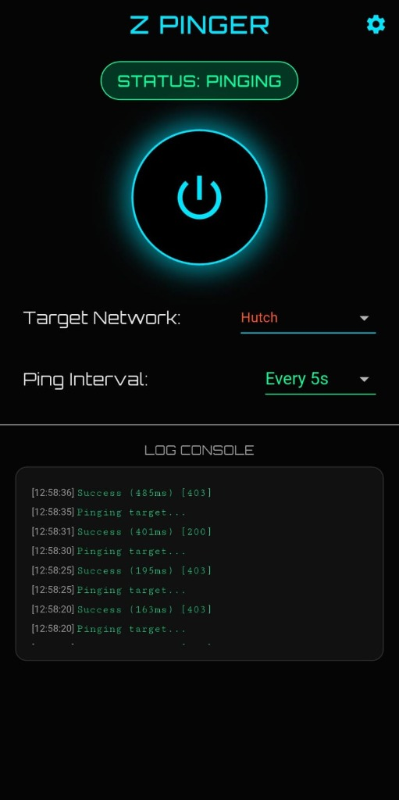
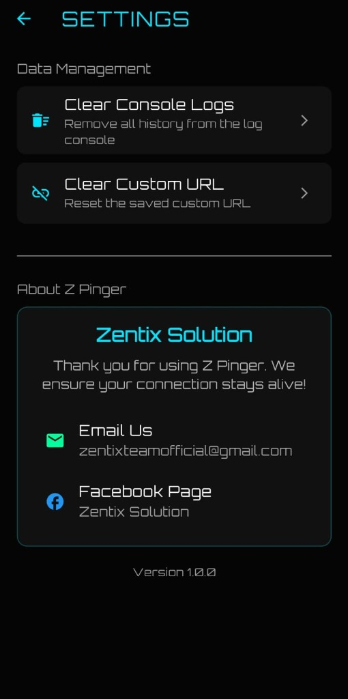

Z Pinger
A robust network utility app designed to maintain stable connections on Android devices.
Z Pinger
Keeps your internet connection alive by preventing the network radio from entering idle mode. Specially for Hutch Users and others with unstable ISP connections.
About This Project
**Z Pinger** is a network utility application designed to maintain active data connections on Android devices by preventing the network radio from entering the idle (sleeping) state. It is ideally suited for users experiencing frequent connection drops or buffering issues (e.g., with Hutch or generic 4G networks).
Key Features:
- Background Keep-Alive: Runs as a persistent Foreground Service to ensure the operating system does not kill the process, keeping your connection stable even when the app is minimized.
- Adjustable Interval: Customize the ping frequency (5s, 10s, 15s, 30s, or 1 minute) to balance stability with data usage.
- Low Data Usage: Uses lightweight HTTP HEAD requests (no body download) to minimize data consumption.
- Hacker/Neon Aesthetic: Features a cool dark mode UI with pulse animations for a modern look and feel.
- Log Console: Provides a real-time view of connection status and ping results directly within the app.
Screenshots


Technology Stack
This application is built with Flutter, ensuring a smooth, native-like experience on Android.
- Framework: Flutter (Dart)
- Networking: Dio (for reliable HTTP HEAD requests)
- Background Execution: flutter_background_service enables continuous operation.
- Notifications: flutter_local_notifications for service status updates.
- Design: Custom dark UI using Google Fonts and Vector Icons.